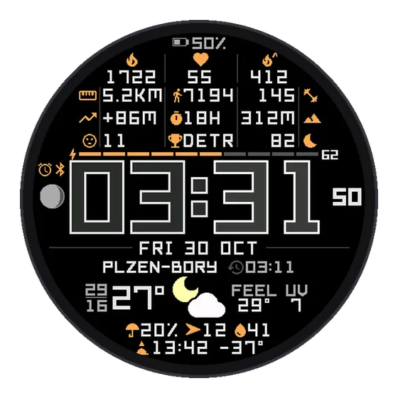
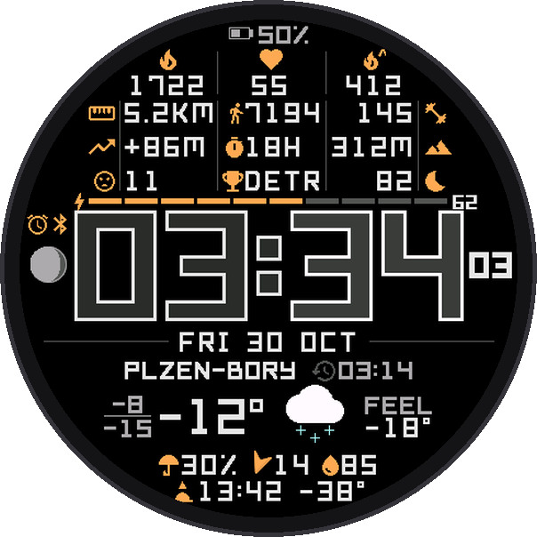
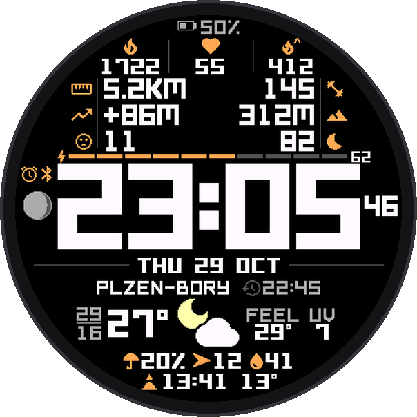
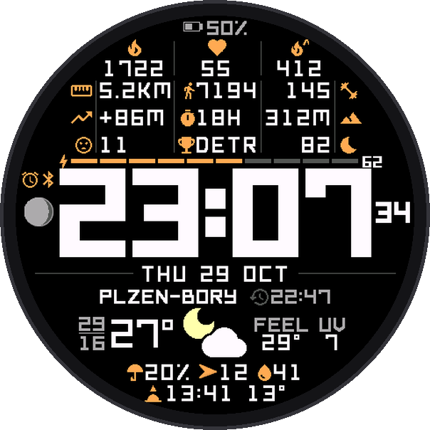

Watch face
Pharos
A big, wide time you read at a glance, with everything you check daily laid out around it. Full of data, still calm: every pixel has a job, every value is aligned, nothing is decoration.
Get it on Connect IQ



What you see
- The time, big and bold, clear in sunlight and at night
- 12 data fields, grouped so related values sit together; values shorten only when they have to, and a number is never cut into a wrong one
- Weather you can use: colour picture, high and low, feels like, rain chance, wind, humidity, UV and the name of your neighbourhood
- The next sunrise or sunset, the moon, a Body Battery bar, battery % or days left
- Touch and hold a field to open the matching app or screen
Weather, your way
- Open-Meteo by default: the best forecast model for where you are (in Central Europe, Germany's 2 km model)
- Or ČHMÚ ALADIN, Yr / MET Norway, Garmin, or OpenWeatherMap with your own key, which adds official weather warnings
- Phone out of reach? The face keeps the last weather and shows how old it is
Make it yours
- Every slot takes any of about 30 Garmin data types or 37 of Pharos's own: readiness, Body Battery outlook, fitness age, sun height, tides, next rain, golden hour, a second time zone, days to a date and more
- 3 columns, or 2 with bigger values; three text styles; accent colours; date formats; 12 or 24 h
- Set it up in the watch's face editor, in the face's own settings on the watch, or in the Connect IQ app
Easy on the battery
- One update a minute, seconds only when you look, and no web traffic at all with Garmin weather
Elegant, rich in data and light on the battery. Designed for round screens, made for 70 Garmin watches. Free for now.